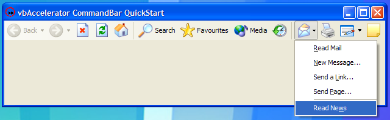
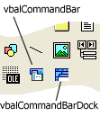

VB5 QuickStart Sample (78K)
VB5 QuickStart Sample (78K)
 VB6 QuickStart Sample (72K)
VB6 QuickStart Sample (72K)
 25 Jan 2004
25 Jan 2004
First Posted
 vbAccelerator CommandBar Control
vbAccelerator CommandBar Control

QuickStart - Creating an IE Toolbar
Describes how to use the vbAccelerator CommandBar control by demonstrating how to create a toolbar which looks like the Internet Explorer main toolbar.
Creating the Toolbar
The first thing you will need are ImageLists containing the icons to display. There are two image lists associated with each CommandBar control instance: the ToolbarImageList and the MenuImageList. As the names suggest, the first is used when rendering toolbars and the second when rendering menus. Note that if icons in the menus are the same size as the ones in the toolbar then the same image list object can be used for both.
You can use any ImageList control including MSCOMCTL.OCX and vbAccelerator Image List controls as the image source; however, for the purposes of this sample I've used the ImageList class. Refer to the ImageList article for more details on using this object. Two image lists are created; one containing the toolbar images with indexes 0 to 15 and another containing two menu images.
With the images in place, there are five steps to creating the toolbar:
- Creating the controls.
- Creating the toolbar and menu buttons.
- Creating the command bars for the toolbars and menus.
- Assigning the command bars to the controls.
- Responding to events.
These are covered in turn.
1. Creating the controls
First, add the vbalCmdBar6.ocx control to your project by choosing Project-Components and pick the vbAccelerator VB6 CommandBar control. You will get two new items in your toolbox:
vbAccelerator CommandBar controls.
Draw an instance of the vbalCommandBar control on your form and name it cmdBar. Now, whenever the command bar control needs to show a menu, it will ask your form for a new instance of a command bar control to use as the popup menu. The easiest way to service this request is by making all of your command bar controls into a control array in VB. Therefore set the Index property of the new control to 0.
2. Creating the toolbar and menu buttons
The IE toolbar in this demo consists of 16 buttons, three of which are hidden and four of which have drop downs. The drop down buttons are the Back, Forward and Mail and Edit buttons. The Back and Forward items are dynamically added as the user navigates whereas the Mail and Edit menus would normally contain a configurable list of items read from the registry. In this case we'll hard-code the Edit and Mail menus to contain a fixed set of items.
Adding buttons to the collection of available buttons is accomplished through the Bars property of the control, which exposes an Add method. Add takes seven properties, six of can be defaulted, and returns the newly created cButton object.
- sKey - the key for the new button. This must be globally unique in your project.
- iIcon - zero based index of the icon to show for the button, or -1 if no icon. Optional; the default is no icon.
- sCaption - the caption for the button. Optional; the default is no caption.
- eStyle - the style for the button. Optional; defaults to a standard push button.
- sToolTip - tooltip to display when the mouse hovers over the button. Optional; default is no tooltip.
- vShortcutKey - shortcut key for the button. Optional; defaults to no shortcut key.
- eShortcutModifier - when using a shortcut key, this specifies the shift keys (control, shift, alt) which must be pressed in combination with the key. Optional; defaults to the control key.
Other properties of the buttons, such as whether the caption or drop-down arrow is shown and whether the button is visible must be set using the properties of the button. Therefore the buttons are added as follows:
Private Sub ConfigureButtons()
Dim btn As cButton
With cmdBar(0).Buttons
' -------------------------------
' Create tool bar buttons:
' -------------------------------
Set btn = .Add("BACK", 0, "Back", eSplit, "Back", _
vbKeyLeft, vbAltMask)
btn.ShowCaptionInToolbar = True
btn.Enabled = False
Set btn = .Add("FORWARD", 1, "Forward", eSplit, "Forward", _
vbKeyRight, vbAltMask)
btn.Enabled = False
.Add "STOP", 2, "Stop", , "Stop"
.Add "REFRESH", 3, "Refresh", , "Refresh"
.Add "HOME", 4, "Home", , "Home", vbKeyHome, vbAltMask
.Add "SEP1", , , eSeparator
Set btn = .Add("SEARCH", 5, "Search", eRadioNullable, , _
vbKeyE, vbCtrlMask)
btn.ShowCaptionInToolbar = True
Set btn = .Add("FAVOURITES", 6, "Favourites", eRadioNullable, , _
vbKeyI, vbCtrlMask)
btn.ShowCaptionInToolbar = True
Set btn = .Add("MEDIA", 11, "Media", eRadioNullable)
btn.ShowCaptionInToolbar = True
.Add "HISTORY", 12, "History", eRadioNullable
.Add "SEP2", , , eSeparator
Set btn = .Add("MAIL", 13, "Mail")
btn.ShowDropDownInToolbar = True
.Add "PRINT", 7, "Print"
Set btn = .Add("FONTSIZE", 8, "Text Size")
btn.Visible = False
.Add "EDIT", 9, "Edit", eSplit
Set btn = .Add("TOOLS", 10, "Show Tools", , "Show Tools")
btn.Visible = False
Set btn = .Add("FULLSCREEN", 14, "Full Screen")
btn.Visible = False
.Add "DISCUSS", 15, "Discuss", , "Discuss"
' -------------------------------
' Create mail menu buttons
' -------------------------------
.Add "MAIL:READ", , "&Read Mail"
.Add "MAIL:NEW", , "&New Message..."
.Add "MAIL:LINK", , "Send a &Link..."
.Add "MAIL:PAGE", , "Send &Page..."
.Add "MAIL:SEP1", , , eSeparator
.Add "MAIL:NEWS", , "Read Ne&ws"
' -------------------------------
' Create edit menu buttons
' -------------------------------
.Add "EDIT:NOTEPAD", 0, "Edit with &Notepad"
.Add "EDIT:WORDPAD", 1, "Edit with &Wordpad"
End With
End Sub
3. Creating the command bars for the toolbars and menus.
In this sample there will be five command bars: one for the toolbar itself, and one for each of the popup menus. Creating these is usually a two-step process: first create the bars and assign the buttons; then assign any drop-down bars to the buttons they should drop down from. New command bars are created through the control's CommandBars collection. The Add method takes the Key (which again must be globally unique) and optional title of the command bar and returns the newly created instance. The Buttons collection of the returned object can then be used to assign the buttons:
Private Sub ConfigureBars()
Dim barStandard As cCommandBar
Dim barBack As cCommandBar
Dim barNext As cCommandBar
Dim barMail As cCommandBar
Dim barEdit As cCommandBar
Dim barButtons As cCommandBarButtons
With cmdBar(0).CommandBars
' Create the standard buttons bar:
Set barStandard = .Add("STANDARD", "Standard Buttons")
' Create bars for the back and next
Set barBack = .Add("BACK", "Back")
Set barNext = .Add("NEXT", "Next")
' Create the edit bar:
Set barEdit = .Add("EDIT")
' Create the mail bar:
Set barMail = .Add("MAIL")
End With
' Assign the buttons
Set barButtons = barStandard.Buttons
With cmdBar(0).Buttons
barButtons.Add .Item("BACK")
barButtons.Add .Item("FORWARD")
barButtons.Add .Item("STOP")
barButtons.Add .Item("REFRESH")
barButtons.Add .Item("HOME")
barButtons.Add .Item("SEP1")
barButtons.Add .Item("SEARCH")
barButtons.Add .Item("FAVOURITES")
barButtons.Add .Item("MEDIA")
barButtons.Add .Item("HISTORY")
barButtons.Add .Item("SEP2")
barButtons.Add .Item("MAIL")
barButtons.Add .Item("PRINT")
barButtons.Add .Item("EDIT")
barButtons.Add .Item("TOOLS")
barButtons.Add .Item("FULLSCREEN")
barButtons.Add .Item("DISCUSS")
End With
Set barButtons = barMail.Buttons
With cmdBar(0).Buttons
barButtons.Add .Item("MAIL:READ")
barButtons.Add .Item("MAIL:NEW")
barButtons.Add .Item("MAIL:LINK")
barButtons.Add .Item("MAIL:PAGE")
barButtons.Add .Item("MAIL:SEP1")
barButtons.Add .Item("MAIL:NEWS")
End With
Set barButtons = barEdit.Buttons
With cmdBar(0).Buttons
barButtons.Add .Item("EDIT:NOTEPAD")
barButtons.Add .Item("EDIT:WORDPAD")
End With
' Assign the drop-downs to their buttons:
With cmdBar(0).Buttons
.Item("BACK").bar = barBack
.Item("FORWARD").bar = barNext
.Item("MAIL").bar = barMail
.Item("EDIT").bar = barEdit
End With
End Sub
4. Assigning the command bars to the controls.
Now the command bars have all been configured, we just need to connect the control to the CommandBar that should be displayed. This is done using the Toolbar property. The Image Lists can be configured here too:
cmdBar(0).ToolbarImageList = m_ilsTools.hIml
cmdBar(0).MenuImageList = m_ilsMenu.hIml
cmdBar(0).Toolbar = cmdBar(0).CommandBars("STANDARD")
5. Responding to events.
As noted before, the Command Bar control displays menus in new instances of itself, and it calls back to your form in order to obtain the new instance. Therefore the most important event to respond to is the RequestNewInstance event. When responding to this, you simply load a new instance of the control. The only thing to watch is to ensure that the returned instance does not have a specific alignment set:
Private Sub cmdBar_RequestNewInstance(Index As Integer, ctl As Object) ' Load new instance: Dim i As Long i = cmdBar.UBound + 1 Load cmdBar(i) ' Important: Align must be 0: cmdBar(i).Align = 0 Set ctl = cmdBar(i) End Sub
You can now respond to click events from the buttons and menu items. Since the controls are in a control array, all events are directed through the same event handler, regardless of whether they originate from a button or a menu:
Private Sub cmdBar_ButtonClick(Index As Integer, btn As cButton)
'
Debug.Print "Clicked button : " & btn.Key & ", (" & btn.Caption & ")"
Debug.Print " checked : " & btn.Checked
'
End Sub
Conclusion
This article has provided a quick walkthrough of setting up a simple CommandBar control which has the same structure as the Standard toolbar in Internet Explorer. Following the pattern described in the article, you should find using the CommandBar control in your own application straightforward.